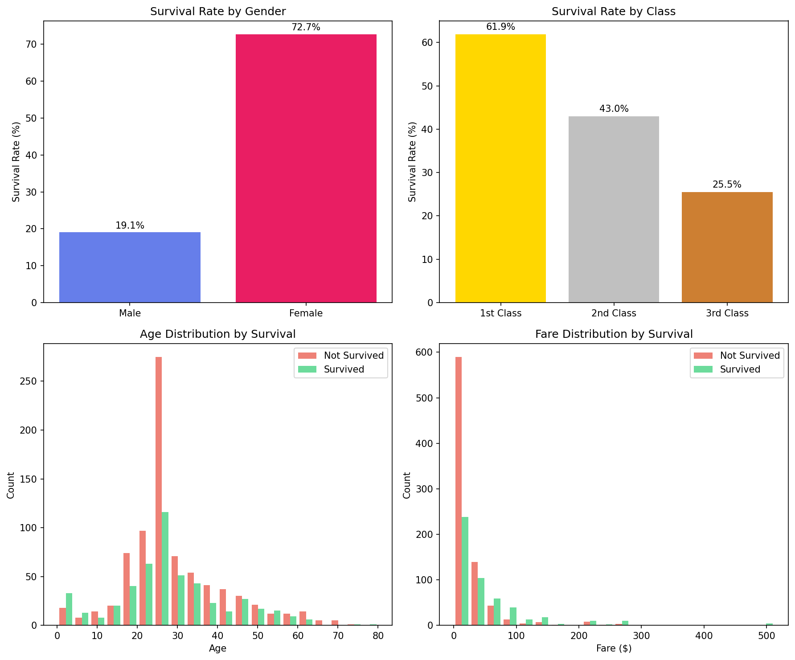
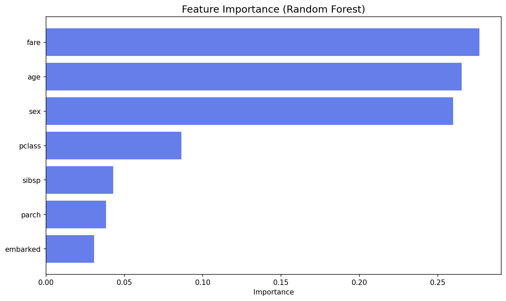
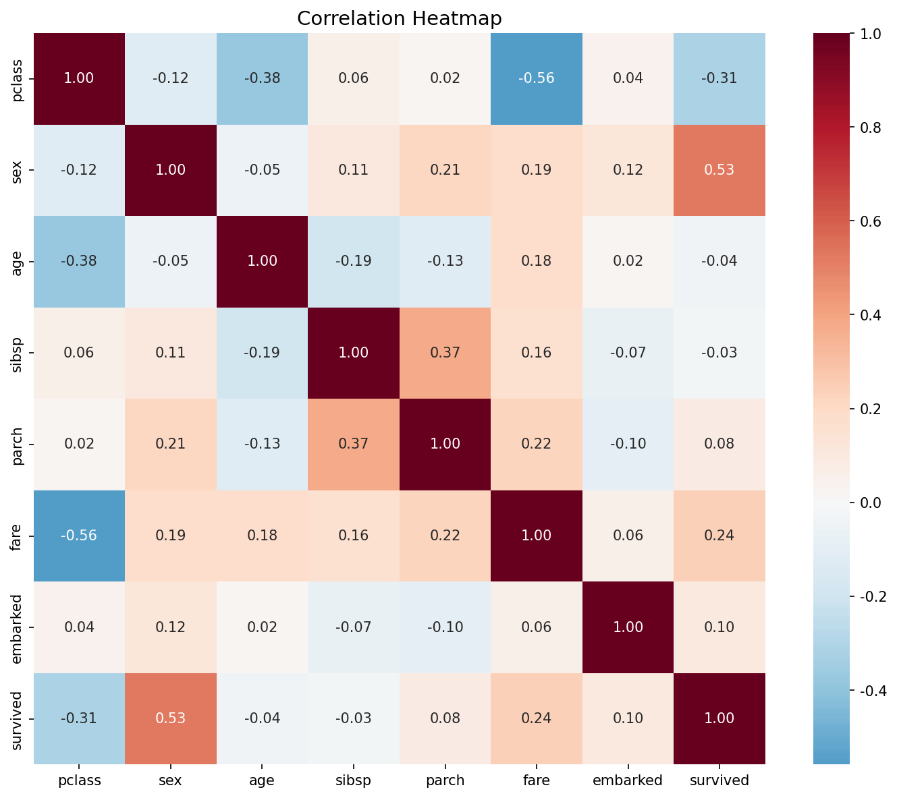

Machine Learning 数据挖掘与可视化分析
数据来源: Kaggle Titanic Dataset | 样本数: 1,309
| 特征 | 说明 |
|---|---|
| pclass | 舱位等级 (1=头等舱, 2=二等舱, 3=三等舱) |
| sex | 性别 |
| age | 年龄 |
| sibsp | 船上兄弟姐妹/配偶数量 |
| parch | 船上父母/子女数量 |
| fare | 票价 |
| embarked | 登船港口 (S/C/Q) |

我们使用3种机器学习算法预测乘客是否生存：
| 模型 | 准确率 |
|---|---|
| Logistic Regression | 78.2% |
| Random Forest ⭐ | 79.0% |
| Gradient Boosting | 77.1% |

